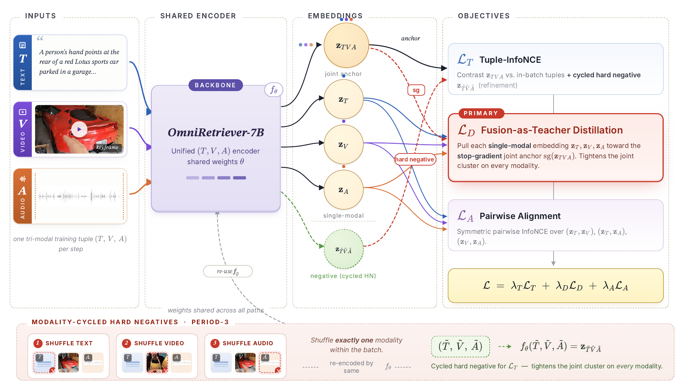
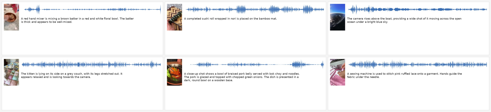

Any-to-Any Audio-Video-Text Retrieval
via Fusion-as-Teacher Distillation
TL;DR. We train a unified audio-video-text encoder via fusion-as-teacher distillation and Tuple-InfoNCE, surpassing closed Gemini Embedding 2 on a new 12-direction AVT retrieval benchmark.
Unified multimodal embedding spaces have become the standard interface for cross-modal retrieval and multimodal RAG, and recent audio-video-text (AVT) encoders extend this setting to three modalities. Such encoders can produce a joint \((T,V,A)\) embedding whenever all three modalities are available, but standard pairwise InfoNCE objectives leave this signal unused during training. We close this gap with fusion-as-teacher distillation, which treats a stop-gradient copy of the fused embedding as a teacher signal for the single-modal embeddings, paired with a Tuple-InfoNCE term that supervises the fused embedding directly. We instantiate this objective as OmniRetriever-7B. Across six zero-shot retrieval benchmarks, OmniRetriever-7B surpasses the closed-source Gemini Embedding 2 by 13.3–18.0 R@1 on Clotho and SoundDescs, and reaches the contemporary zero-shot specialist band of open video–text encoders on MSR-VTT and MSVD. To stress-test joint representations, we further release OmniRetriever-Bench, a 12-direction AVT retrieval benchmark totaling 3,782 triples; on it OmniRetriever-7B attains AVG-all 34.84, improving over Gemini Embedding 2 by +1.72 and over the best prior open-source AVT method by +8.03. Model weights, datasets, and code will be released.

A unified AVT encoder \(f_\theta\) already computes a joint embedding \(\mathbf{z}_{TVA}\) on every \((T,V,A)\) forward, but pairwise InfoNCE leaves it unsupervised. We turn \(\mathbf{z}_{TVA}\) into a training signal with two complementary losses on top of the standard pairwise alignment \(\mathcal{L}_A\):
Both losses reuse the same backbone forward and apply to any unified retriever whose forward pass produces a joint multi-stream embedding. A cross-backbone replication on Omni-Embed-Nemotron-3B reproduces the dominant \(\mathcal{L}_D\) contribution.
Clotho T→A
+18.0 R@1
vs. Gemini Embedding 2
SoundDescs T→A
+13.3 R@1
vs. Gemini Embedding 2
OmniRetriever-Bench
34.84 AVG-all
+1.72 vs. Gemini Embedding 2
+8.03 vs. best open AVT
OmniRetriever-7B reaches the zero-shot audio–text specialist band on Clotho and reduces the prior open omni-modality gap on \(A\!\to\!T\) directions; gains concentrate on the eight audio-anchored routes of OmniRetriever-Bench (e.g., \(A\!\to\!T\) 11.92 vs. 1.48, \(V\!\to\!A\) 25.46 vs. 13.80 against Gemini Embedding 2). On the four visually-saturated \(T\!\leftrightarrow\!V\) and \(T\!\leftrightarrow\!A{+}V\) routes, Gemini still leads by 6–10 R@1, consistent with its larger closed video–text training corpus.
Standard audio–text and video–text benchmarks evaluate only single-modal directions and never pool both video and audio in the same gallery. OmniRetriever-Bench is, to our knowledge, the first benchmark to score retrieval across all 12 single- and dual-modal directions (\(T\!\leftrightarrow\!V\), \(T\!\leftrightarrow\!A\), \(V\!\leftrightarrow\!A\), \(T\!\leftrightarrow\!AV\), \(A\!\leftrightarrow\!TV\), \(V\!\leftrightarrow\!AT\)) on a shared 3,782-triple held-out gallery. All captions are reviewed and corrected by trained human annotators starting from a Gemini 3.0 Pro draft.

Six sample cards from OmniRetriever-Bench — everyday user-generated content covering cooking, scenery, pets, narration, ambient music, and casual dialogue.
@article{liu2026omniretriever,
title = {OmniRetriever: Any-to-Any Audio-Video-Text Retrieval via Fusion-as-Teacher Distillation},
author = {Liu, Yunze and Wu, Chi-Hao and Zhou, Enmin and Shen, Junxiao},
journal = {arXiv preprint},
year = {2026}
}